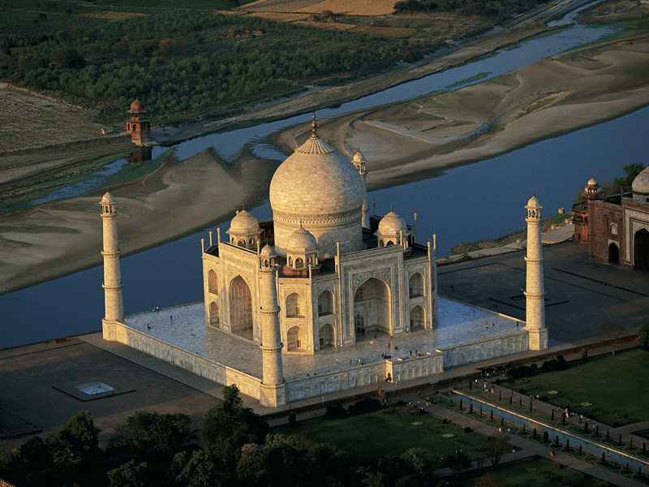

Wonder of the world |
|---|
Taj Mahal
The Taj Mahal ('Crown of the Palace')is an Islamic ivory-white marble mausoleum on the right bank of the river Yamuna in the Indian city of Agra.
It was commissioned in 1631 by the Mughal emperor Shah Jahan (r. 1628–1658) to house the tomb of his favourite wife, Mumtaz Mahal; it also houses the tomb of Shah Jahan himself. The tomb is the centrepiece of a 17-hectare (42-acre) complex, which includes a mosque and a guest house, and is set in formal gardens bounded on three sides by a crenellated wall. More about Tajmahal |
| Copyright © 2023 |